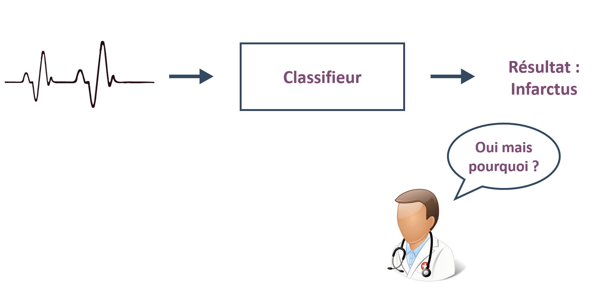

Le projet

TSExplanation s’inscrit dans le cadre de la formation en cycle ingénieur à l’INSA de Rennes. Il est réalisé par un groupe de huit étudiants de deuxième année du département Informatique et s’étend sur l’ensemble de l’année scolaire 2018-2019. Les domaines abordés sont ceux du Machine Learning, et plus spécifiquement de la classification de séries temporelles. Le résultat retourné par un classifieur ne comporte aucune explication. L'humain ne peut donc pas connaître les raisons pour lesquelles le classifieur a choisi ce résultat là. Une explication pourrait apporter de la confiance au classifieur. Le but de ce projet est d’implémenter un outil capable d'expliquer une décision prise par un classifieur de séries temporelles. Cette explication doit être claire et relativement simple pour qu’elle soit comprise par un utilisateur quelconque. Pour vulgariser cet objectif, on peut prendre l’exemple d’un classifieur qui décide, à partir d'électrocardiogrammes, si un patient présente une maladie cardiaque ou non. Si un médecin utilise un tel classifieur, il voudrait avoir confiance en la décision prise par son outil. Pour cela, le médecin voudrait pouvoir demander à l'outil d'expliquer le choix de classification (le diagnostic de la maladie).
